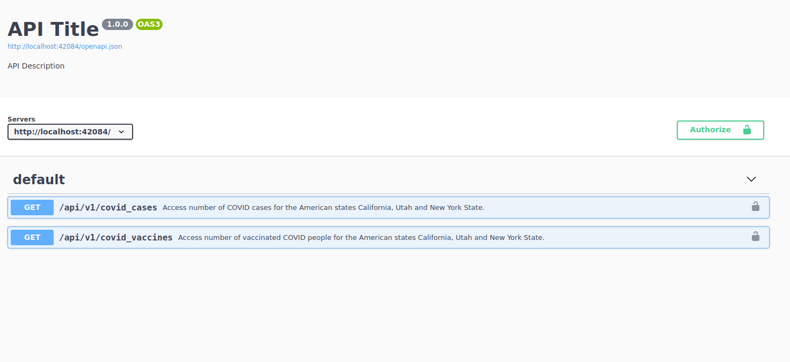
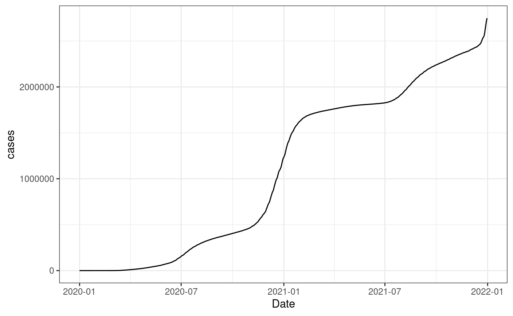

A primer on APIs
A Primer on APIs
APIs are designed to work programatically not through a user interface.
Benefits
Schedule requests
Increase intensity of requests no human can do
Construct logic in your program: results from an endpoint are used as input to other endpoint and checks are provided a long the way
Build application that request data real-time
A Primer on APIs
This chapter is hands-on. We focus on programatically accessing an API.
Let’s load the packages we’ll use in this chapter:
library(scrapex)
library(httr2)
library(dplyr)
library(ggplot2)A Primer on APIs
Objective of the slides:

Plot for California
A Primer on APIs
How do we get there? Thank the COVerAGE-DB team.
This package contains an internal API that wraps the COVerAGE-DB database. COVerAGE-DB is an open-access database including cumulative counts of confirmed COVID-19 cases, deaths, tests, and vaccines by age and sex. For more information, visit their website at https://www.coverage-db.org/
scrapex contains a small copy of this database.
A Primer on APIs
api_covid <- api_coveragedb()[1] "Visit your REST API at http://localhost:30891"
[1] "Documentation is at http://localhost:30891/__docs__/"The API is now launched in the background
Note that learning about a new API online you won't have to launch any API.
APIs are hosted on servers elsewhere and you'll just need to read how to access the API.
First thing you want to do is access docs.
A Primer on APIs

A Primer on APIs

A Primer on APIs
API has two endpoints: one for cases, another for vaccines
API has no authentication
Cases endpoint has two parameters:
regionandsex, which both are required.We see that it returns two status codes:
200and500How do make a request with this info?
A Primer on APIs
A base URL. In this case, it's http://localhost:2234. Yours will be different because you launched it in your local computer.
The endpoint URL of this specific endpoint. For the COVID cases, this is
/api/v1/covid_cases.The parameters in the endpoint which are specified after a
?and each parameter is then concatenated with&.
api_web <- paste0(api_covid$api_web, "/api/v1/covid_cases")
cases_endpoint <- paste0(api_web, "?region=California&sex=m")
cases_endpoint[1] "http://localhost:30891/api/v1/covid_cases?region=California&sex=m"Making your first request
Building API paths can be tedious. Let’s use R:
api_web <- paste0(api_covid$api_web, "/api/v1/covid_cases")
req <- request(api_web)
req<httr2_request>GET http://localhost:30891/api/v1/covid_casesBody: emptyrequest builds a “placeholder” for our request. It says it already has the endpoint URL (we can see it in the GET line) but it does not say anything about our parameters or headers.
Making your first request
Construct URL query programatically:
req_california_m <-
req %>%
req_url_query(region = "California", sex = "m")
req_california_m<httr2_request>GET http://localhost:30891/api/v1/covid_cases?region=California&sex=mBody: emptyDo you see the idea here? request builds a placeholder for the endpoint and then you add as many "add-on's" as you want to your request.
Making your first request
req_california_m %>%
req_auth_basic(username = "fake name", password = "fake password") %>%
req_retry(max_tries = 3, max_seconds = 5)<httr2_request>GET http://localhost:30891/api/v1/covid_cases?region=California&sex=mHeaders:• Authorization: '<REDACTED>'Body: emptyPolicies:• retry_max_tries: 3• retry_max_wait: 5See how we can “add” as many things to our “request”? These things might came in the headers or defined in R.
Making your first request
Let’s get back to our previous request:
req_california_m<httr2_request>GET http://localhost:30891/api/v1/covid_cases?region=California&sex=mBody: emptyMaking your first request
Once the request is ready, perform the request with req_perform:
resp_california_m <-
req_california_m %>%
req_perform()
resp_california_m<httr2_response>GET http://localhost:30891/api/v1/covid_cases?region=California&sex=mStatus: 200 OKContent-Type: application/jsonBody: In memory (1086936 bytes)Making your first request
We can interpret a few things out of this request.
It was successful. The
200status code means that it was OK, so nothing failedThe response content-type is
JSON, meaning the data that was sent is inJSONformatThe actual body of the request has data, which is now loaded in RAM memory
All request data has functions
req_*. Response functions haveresp_*
Making your first request
For example:
resp_status(resp_california_m)[1] 200resp_content_type(resp_california_m)[1] "application/json"resp_encoding(resp_california_m)[1] "UTF-8"In our case, we need resp_body_json to extract the data.
Making your first request
resp_body_california_m <-
resp_california_m %>%
resp_body_json(simplifyVector = TRUE) %>%
as_tibble()
resp_body_california_m# A tibble: 5,848 × 11
Country Region Code Date Sex Age AgeInt Metric Measure Value templateID
<chr> <chr> <chr> <chr> <chr> <chr> <int> <chr> <chr> <int> <chr>
1 USA Calif… US-CA 2020… m 0 10 Count Cases 0 USA_CDC_c…
2 USA Calif… US-CA 2020… m 10 10 Count Cases 0 USA_CDC_c…
3 USA Calif… US-CA 2020… m 20 10 Count Cases 2 USA_CDC_c…
4 USA Calif… US-CA 2020… m 30 10 Count Cases 2 USA_CDC_c…
5 USA Calif… US-CA 2020… m 40 10 Count Cases 1 USA_CDC_c…
6 USA Calif… US-CA 2020… m 50 10 Count Cases 1 USA_CDC_c…
7 USA Calif… US-CA 2020… m 60 10 Count Cases 1 USA_CDC_c…
8 USA Calif… US-CA 2020… m 70 10 Count Cases 1 USA_CDC_c…
9 USA Calif… US-CA 2020… m 0 10 Count Cases 0 USA_CDC_c…
10 USA Calif… US-CA 2020… m 10 10 Count Cases 0 USA_CDC_c…
# … with 5,838 more rowsMaking your first request
Data has > 5K rows
JSONs can be nested so
simplifyVector = TRUEAs opposed to web scraping, data is organized and clean
Additional info such as encoding to read data seamlessly
Awesome, this was your first request!
Making your first request
options(scipen = 231241231)
resp_body_california_m <-
resp_body_california_m %>%
mutate(Date = lubridate::ymd(Date)) %>%
group_by(Date, Sex) %>%
summarize(cases = sum(Value))
resp_body_california_m %>%
ggplot(aes(Date, cases)) +
geom_line() +
theme_bw()Making your first request

Making your first request
# Perform the same request but for females and grab the JSON result
resp_body_california_f <-
req %>%
req_url_query(region = "California", sex = 'f') %>%
req_perform() %>%
resp_body_json(simplifyVector = TRUE) %>%
as_tibble()
resp_body_california_f <-
resp_body_california_f %>%
mutate(Date = lubridate::ymd(Date)) %>%
group_by(Date, Sex) %>%
summarize(cases = sum(Value))
resp_body_california <- bind_rows(resp_body_california_f, resp_body_california_m)
resp_body_california %>%
ggplot(aes(Date, cases, color = Sex, group = Sex)) +
geom_line() +
theme_bw()Making your first request